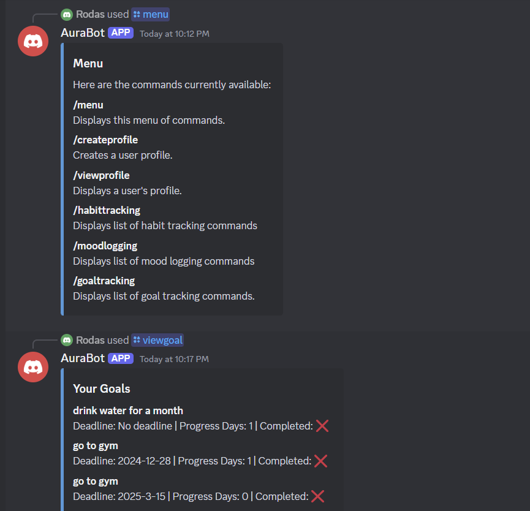
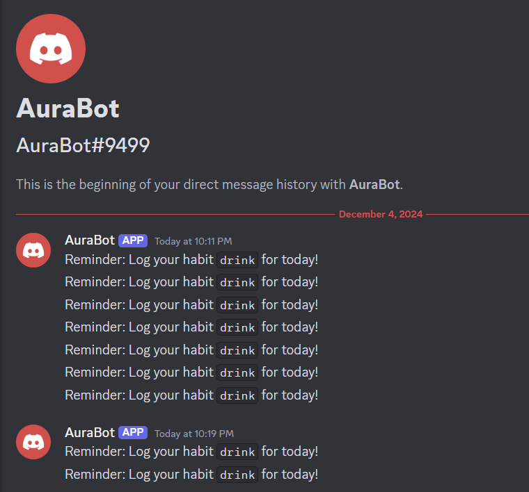

Introduction: What is AuraBot?
Mental health is important, but finding tools to manage it can be a challenge. For people with ADHD and anxiety, tracking moods and building healthy habits is often overwhelming. Many existing tools are expensive, hard to use, or don’t respect user privacy, leaving people without the support they need. That’s why we created AuraBot—a free and simple tool on Discord that helps users track their moods, monitor habits, and see progress over time. By using Discord, a platform millions already rely on, AuraBot makes mental health tracking easy to access without the need for additional apps or costs.
AuraBot focuses on privacy, simplicity, and inclusivity. It only collects necessary data and keeps it secure, so users feel safe. The bot is designed to be easy to use, with clear commands and customizable reminders that help users track habits like drinking water or logging emotions. While it’s especially useful for those with ADHD or anxiety, AuraBot is also designed for anyone who wants to build healthier habits or better understand their emotions. With features like mood trend visualization, AuraBot gives users helpful insights to improve their well-being. Our goal is to provide a supportive, accessible tool that empowers everyone to take control of their mental health.
Project Overview
AuraBot helps users track their mood and visualize trends to improve mental well-being. Below are visualizations of key features:
Showing /menu and /viewgoal
Reminder Notifications
Positive Disability Principles
- Ableist Practices:
- AuraBot avoids ableist assumptions by using neutral and inclusive language that respects users’ diverse experiences.
- The bot does not impose rigid schedules or judgmental prompts, ensuring that users feel supported rather than pressured.
- Our design focuses on empowering users to manage their mental health in a way that works for them, without creating additional stress or barriers.
- Accessibility:
- AuraBot is designed to be accessible for all users by working on Discord, a free and widely used platform.
- Commands are simple and text-based, ensuring compatibility with screen readers and other assistive technologies.
- The bot’s clear and customizable reminders make it easier for individuals with ADHD, anxiety, and other cognitive challenges to use the tool effectively.
- Disability-Led Design:
- Individuals with ADHD and anxiety were involved in the design and testing of AuraBot to ensure the tool met their needs.
- Their feedback directly influenced features like customizable prompts, mood tracking, and streak-based motivation.
- This collaboration ensures that AuraBot is grounded in the lived experiences of the people it aims to support.
- User Agency and Control:
- AuraBot empowers users by allowing them to set and delete reminders, log their moods privately, and customize their experience.
- The bot gives users full control over how they interact with it, supporting their unique mental health goals and preferences.
- By prioritizing flexibility, AuraBot ensures users can manage their mental health without feeling restricted or judged.
- Intersectionality and Inclusivity:
- AuraBot considers the needs of users with overlapping identities, including those who are multiply disabled or come from marginalized backgrounds.
- Its simple, adaptable design makes it a supportive tool for individuals with a variety of cognitive and mental health challenges.
- By fostering an inclusive environment, AuraBot ensures that all users feel welcomed, respected, and valued.
Methodology and Results
We developed AuraBot using Python and the Discord API, with MongoDB for secure data storage. The bot includes features like:
- Private mood logging via Discord commands.
- Customizable daily check-ins and reminders.
- Data visualization for mood trends.
Our metrics for success included screen-reader compatibility, secure data encryption, and positive user feedback during testing.
Disability Justice Analysis
- Leadership of Those Most Impacted:
- We understand the challenges of ADHD and anxiety, so we created AuraBot to help users organize feelings, habits, and reminders in a supportive and accessible way.
- We prioritized features like customizable reminders and private mood tracking based on our understanding of what works best for users.
- By centering our experiences, we created a tool that empowers others through meaningful and relatable features.
- Intersectionality:
- AuraBot recognizes that mental health challenges like ADHD and anxiety often overlap with other identities, such as race, gender, and class.
- By using Discord, a free and accessible platform, AuraBot supports individuals from underserved communities who may face additional barriers to accessing mental health tools.
- Its neutral and inclusive language creates a space where all users, regardless of their intersecting identities, feel respected and supported.
- Anti-capitalism:
- AuraBot provides a free tool, eliminating financial pressures often associated with mental health resources. (If it's FREE, it's for ME!)
- Many existing tools require expensive subscriptions, making them inaccessible to individuals with limited financial resources.
- By removing monetization pressures, AuraBot ensures mental health support is available to everyone, not just those who can afford it.
Learnings and Future Work
We gained valuable insights during the development of AuraBot, particularly about the importance of accessibility, user-centered design, and customization. Here are the key takeaways:
- Accessibility matters from the start: Designing with accessibility in mind ensured AuraBot could be used by a diverse range of people, including those with visual and cognitive disabilities.
- User feedback is essential: Testing and iterating based on real user experiences helped refine features like customizable reminders and mood tracking.
- Customization empowers users: Offering flexible features allows users to tailor the bot to their unique needs, ensuring a more personalized and effective experience.
- Simple design is effective: Streamlined commands and a clear interface made the bot intuitive and reduced barriers to use.
Looking ahead, we plan to enhance AuraBot with additional features to make it even more helpful and inclusive. Future improvements could include:
- Multilingual support: Expanding language options to reach a global audience.
- Advanced data visualizations: Allowing users to track mood trends over time and gain deeper insights into their mental health.
- Platform integrations: Connecting AuraBot with external tools like calendars or habit-tracking apps to enhance functionality.
- Voice commands: Adding speech-based interactions to improve accessibility for users with diverse abilities.
- Enhanced customization: Collecting user input to improve features and ensure AuraBot continues to adapt to diverse user needs!
If you have any concerns, suggestions, or feedback about AuraBot, feel free to email m2wangsa@gmail.com. Your input is invaluable for improving the bot and shaping its future updates!